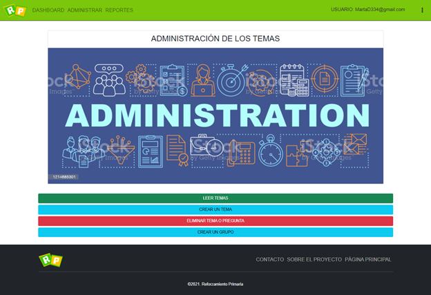
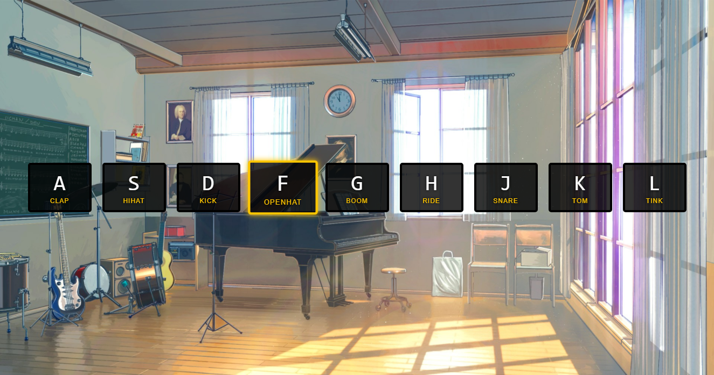
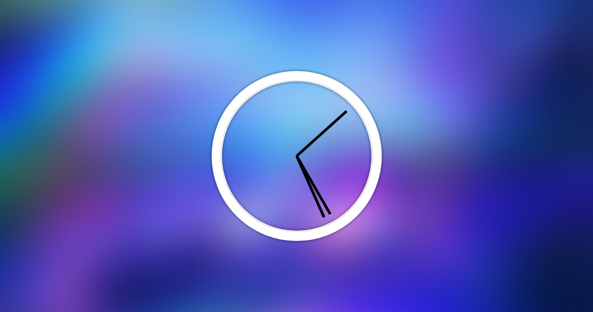

Sitio Web con la finalidad de reforzar el contenido academico de niños de 3, 4 y 5 grado. Algunas de sus funcionalidades consisten en inicio de sesion y registro, visualizacion de ranking por puntajes, lectura de temas, juego de preguntas para estudiantes y administracion CRUD para maestros. Este sitio fue construido con HTML, CSS, Javascript, Framework Bootstrap para el Frontend y Java-JSP para el backend.
 Ver repositorioPágina web que simula, mediante el uso del teclas especificas, los sonidos de una bateria. Utiliza javascript para aplicar animaciones, modificacion del DOM y eventos de la página para que al momento de presionar una tecla, se reproduzca un sonido especifico. La página fue creada utilizando HTML, CSS y Javascript.
 Ver repositorioEsta página simula un relog analógico mediante el uso de Javascript para obtener información de fecha y hora local. Esta página fue creada haciendo uso de HTML, CSS y Javascript.
 Ver repositorio¡Hola!, me llamo Luis, soy un entusiasta de la programación, estudio desarrollo de software tanto de manera formal como autodidacta. Me divierte aprender cosas nuevas y los retos del mundo tecnológico.